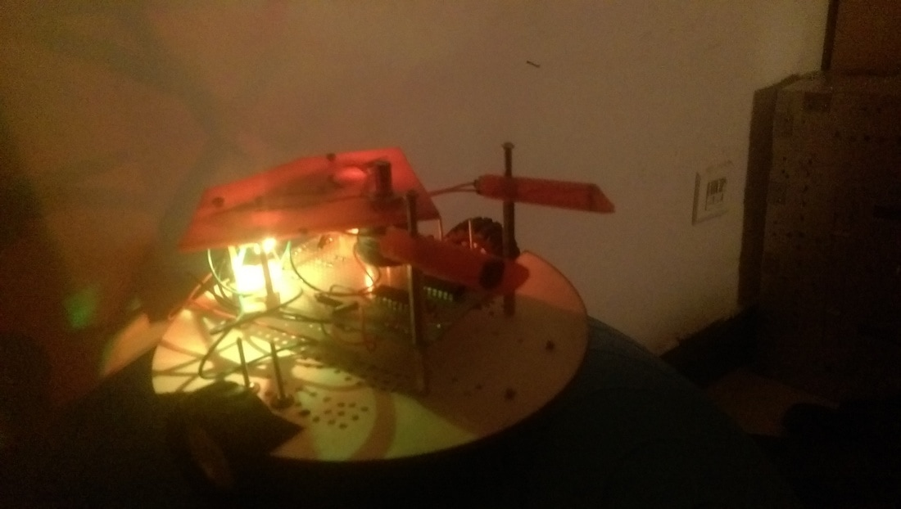
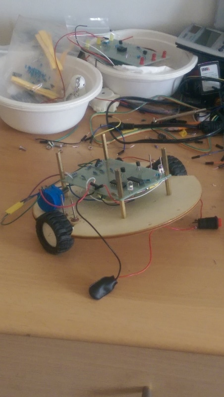
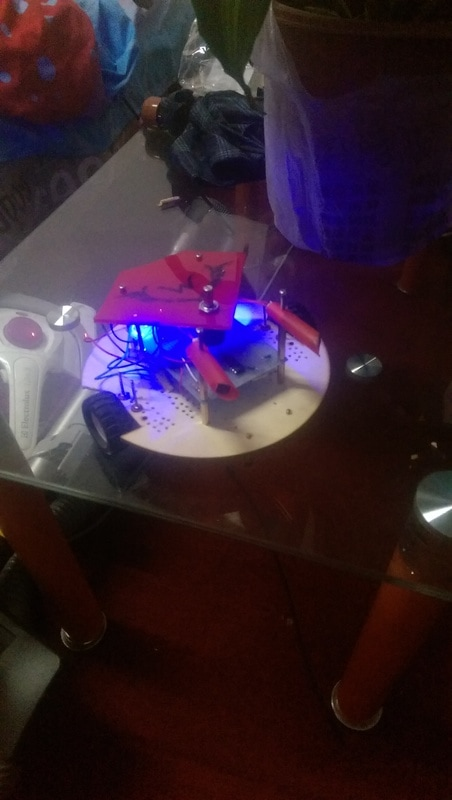
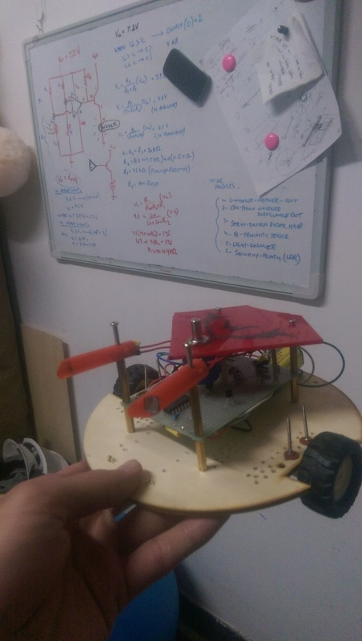

07 / PERSONAL PROJECT
Light Follower Three Wheeler
A three-wheeled robot that follows light using a sensor-driven electronic circuit.

PROJECT OVERVIEW
The idea and implementation.
The circuit combines light-dependent resistors, voltage comparators, transistors, resistors, and motors to make the robot follow a light source.
This personal project was also a gift for my mother.
Project gallery


